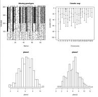
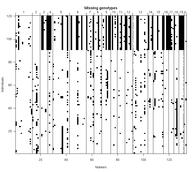
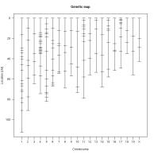
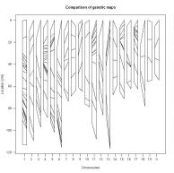
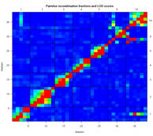
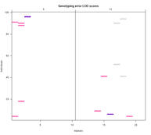
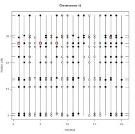
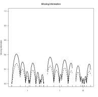
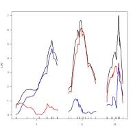
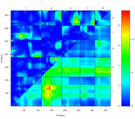

[ Home | Download | FAQ | Status | Bugs | Sample data | Tutorial | Book | Manual | Citation ]
|  | Summary plot for an experimental
cross. The top left panel displays the pattern of missing
genotype data; the top right shows the genetic map. The lower
panels are histograms of two phenotypes.
| 
| Pattern of missing genotype data in a cross. Black
pixels indicate missing genotypes. Gray pixels indicate
partially missing genotypes (in an intercross, genotypes coded as
"not B" or "not A").
| 
| Locations of markers on a genetic
map.
| 
| Side-by-side comparison of two genetic maps. This
can be useful for comparing the genetic map obtained from a
database to that estimated with the observed data.
| 
| Estimated recombination fractions for all pairs of markers
(on selected chromosomes), along with LOD scores for the test of
r = 1/2. (The recombination fractions are in the upper left
triangle; LOD scores are in the lower right triangle.) Red
indicates a large LOD score or a small recombination fraction,
while blue is the opposite. Note that a marker on chromosome 8
appears to be switched with a marker on chromosome 18. Further,
a marker on chromosome 1 likely belongs on chromosome 18.
| 
| Genotyping error LOD scores. Colored pixels
represent larger values of the error LOD scores described by
Lincoln and Lander (1992) and which indicate likely genotyping
errors. The genotypes corresponding to purple pixels are likely
to be in error.
| 
| Observed marker genotype data for an intercross.
White, gray and black circles correspond to the genotypes AA, AB,
and BB, respectively. Genotypes flagged by red squares were
indicated to be likely genotyping errors.
| 
| Proportion of missing genotype information, calculated
in two ways (using the concepts of entropy and of variance).
Values of 0 correspond to complete data; large values
indicate regions with little marker data. The ticks below
indicate the locations of genetic markers.
|  | LOD curves for a
single-QTL model for a selected set of chromosomes,
calculated with the two-part model described by Boyartchuck et
al. (2001), Nat Genet 27, 259-260. The ticks below
indicate the locations of genetic markers.
| 
| LOD scores for a two-dimensional genome scan with a
two-QTL model, for a selected set of chromosomes. Values in the
lower right triangle are for joint two-locus LOD scores; values
in the upper left triangle are LOD scores for the test of
epistasis. The color scale at the right indicates separate
scales for the joint LOD scores (right) and the epistasis LOD
scores (left).
| |
[ Home | Download | FAQ | Status | Bugs | Sample data | Tutorials | Book | Manual | Citation ]